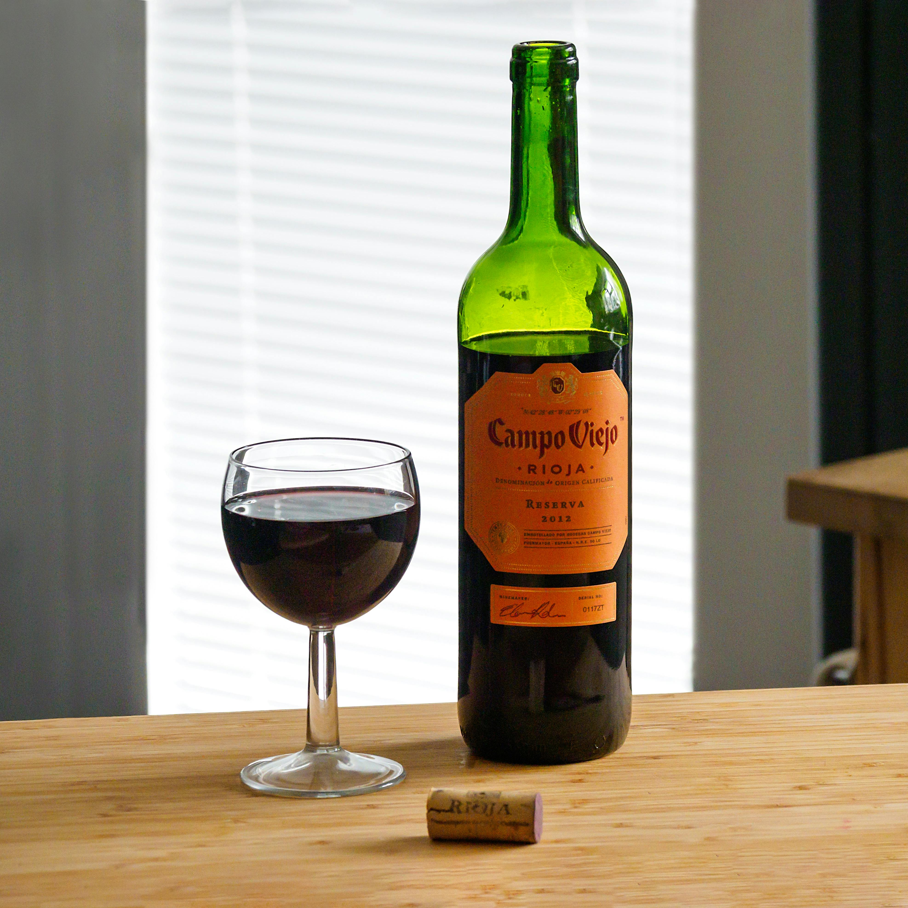
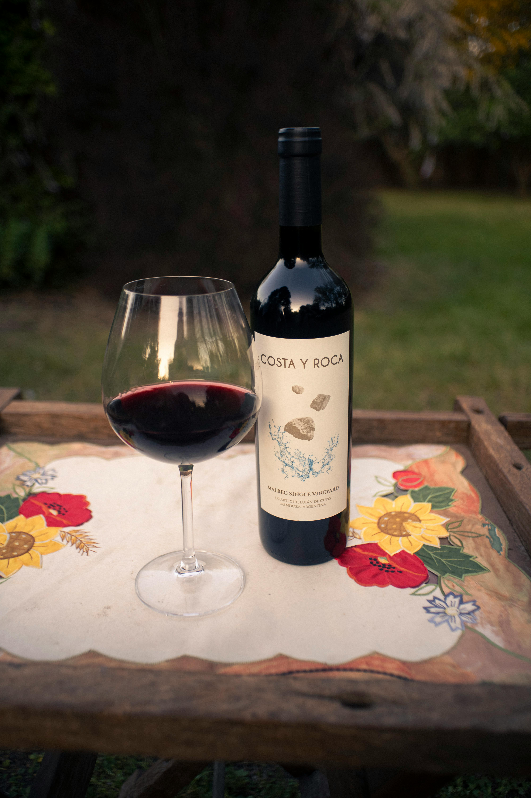
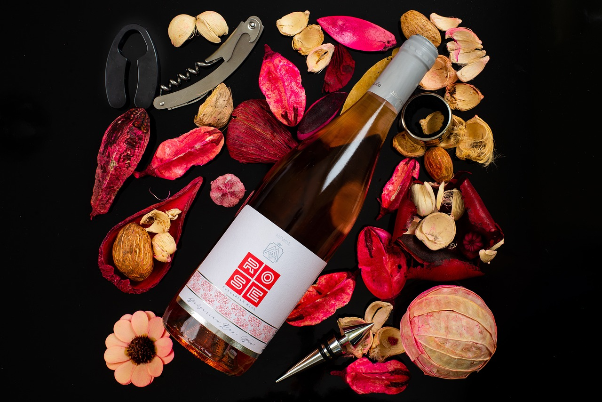
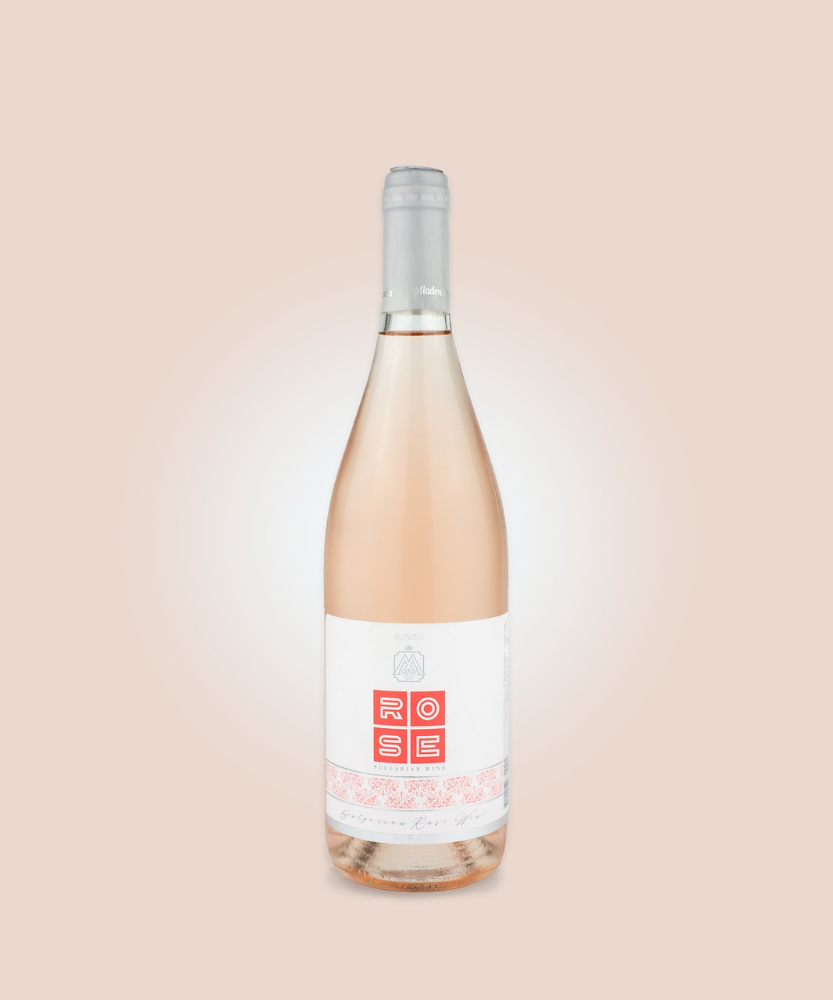
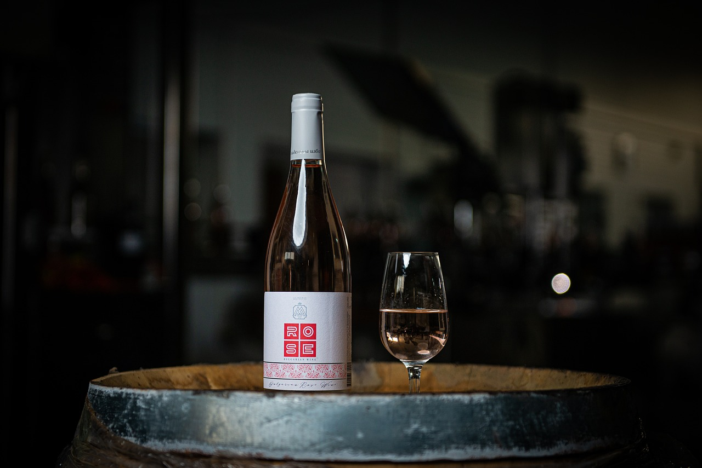
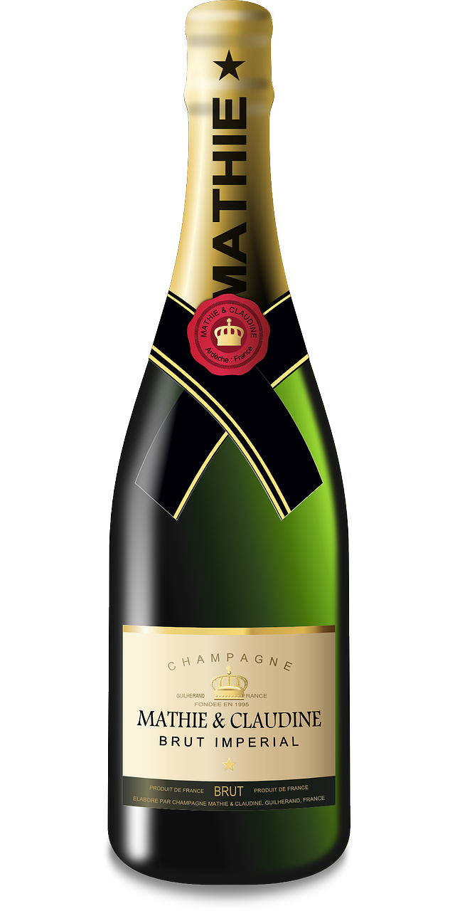
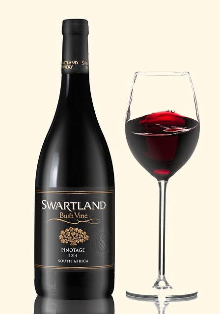
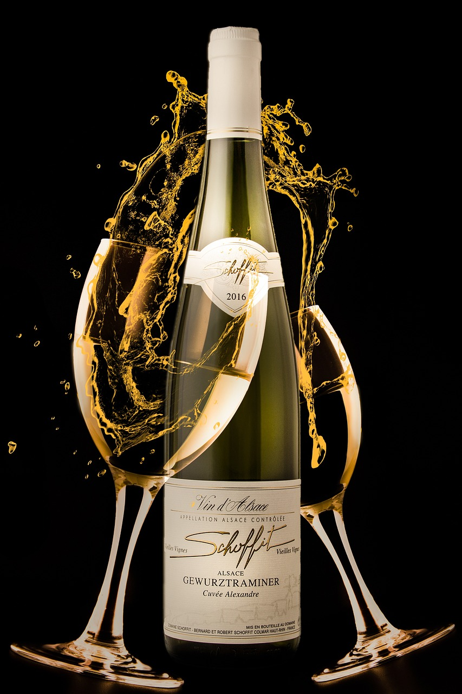
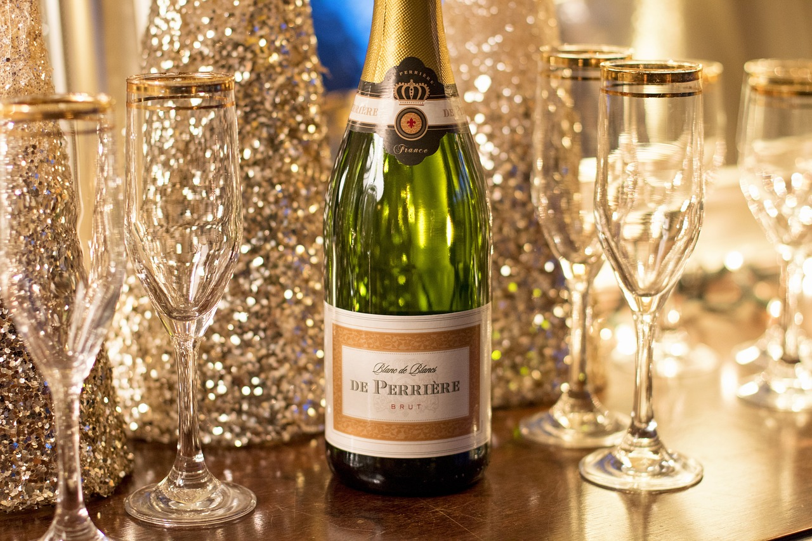

Campo Vieno
Tannin provides the backbone of red wine, which is why you might describe a red wine as “firm” or “leathery” or just plain “bitter.” Tannin also gives red wine texture, making it feel “smooth” and “soft” or “rough” and “chewy.” In general, the darker the wine, the higher the tannin and the “bolder” the taste.Read More

Costa Y Roca
Red wine is a type of wine made from dark-colored grape varieties. The color of the wine can range from intense violet, typical of young wines, through to brick red for mature wines and brown for older red wines. Read More

ROSE
Rosé, or blush wine, is pink in color. It gets that way because it is allowed to stay in contact with the red grape skins for a relatively short time compared to red wine. On the spectrum between red and white, rosé is much closer to the light side, with relatively low tannin. Read More

Zinfandel
A broad, exotic array of fruits from stone (overripe nectarine), to red (raspberry, sour cherry), to blue (plum, blueberry), to black (blackberry, boysenberry), Asian 5 Spice Powder, Sweet Tobacco Read More

Pinot Noir
Very red fruited (cherry, cranberry) and red-floral (rose), often with appealing vegetal notes of beet, rhubarb, or mushroom Read More

Chardonnay
Yellow citrus (Meyer lemon), yellow pomaceous fruits (like yellow pear and apple), tropical fruits (banana, pineapple), and often a touch of butterscotch, vanilla or toasted caramel notes from oak Read More
Sauvignon Blanc
Aggressively-citrus-driven (grapefruit pith), with some exotic fruits (honeydew melon, passion fruit, kiwi) and always an herbaceous quality (grass, mint, green pepper) Read More

Pinot Gris
Delicate citrus (lime water, orange zest) and pomaceous fruits (apple skin, pear sauce), white floral notes, and cheese rind (from lees usage) Read More

Riesling
Citrus (kefir lime, lemon juice) and stone-fruit (white peach, nectarine) always feature prominently, although there are also usually floral and sweet herbal elements as well. Read More
AUSTERE
A wine with buttery characteristics has been aged in oak and generally is rich and flat (less Acidity). A buttery wine often has a cream-like texture that hits the middle of your tongue almost like oil (or butter) and has a smooth finish. Read More

Guerinda La Roya
Garnacha Roya is the local name of the indigenous Grey Garnacha. La Roya is a full-bodied white with a little tannin on the palate and beautiful tension. On the nose it is light and fine. It has citric and stone fruit (apricot) aromas; dried flower notes and subtle aniseed hints. Lingering, vibrant and mineral finish. A wonderful gastronomic wine. Read More